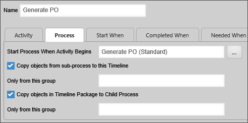
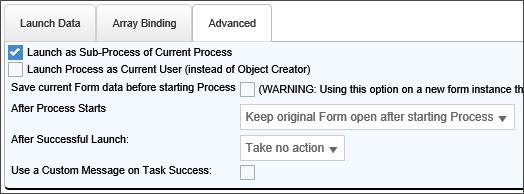
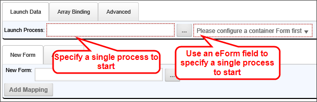
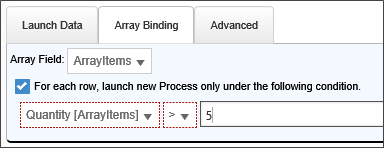
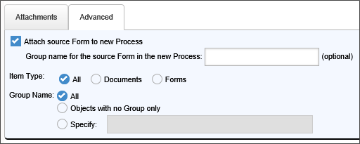
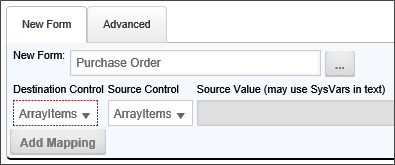

|
|
Lesson Contents | In this Lesson, you will learn how to create subprocesses that run under a parent process. |
A subprocess is simply a process that is started by another process, usually through the Run Process Custom task. The subprocess is often referred to as a child process, while the process that called it is referred to as the parent process. Any process may be a subprocess or parent process. There is no substantive difference between parent or child processes, other than how they are called. Often, processes that usually run as stand-alone processes are called as subprocesses by other processes.
For instance, you might have an HR Interview process that is run any time an employee is promoted, transferred, or moves to another job. Most of the time, this process will run as a stand-alone process during internal employee changes. When hiring a new employee, or terminating an employee, however, an HR Interview may also be required, so, in those two cases, the HR Interview process will be called as a subprocess of the larger onboarding or termination process.
Another common use for subprocesses is to package an operation or set of operations that do not require human intervention into a parent process. Using subprocesses in this way reduces clutter in the parent Process Timeline by moving multiple automated steps out of the main Process Timeline, and replacing them with a single Process step.
As mentioned, the subprocess is usually called by adding a Process activity to a Process Timeline. When adding a Process activity, the configured process is automatically called as a subprocess. You can configure the subprocess by selecting the desired subprocess with the Start Process When Activity Begins Object Picker. Additional options enable you to copy objects between the parent and child processes.

In addition, you can also call a Run Process Custom Task to configure a process to run as a subprocess. This Custom Task can be called from a Form or a Process Timeline activity. One of the Advanced properties of the Run Process Custom Task is the ability to choose whether to make the process a subprocess or not.

The Run Process Custom Task is more complicated to configure than a Process activity in a Process Timeline, but it has several important configuration options.
You can start a single process that you specify in the Custom Task, or that you specify in a Form field.

You can bind the Custom Task to an array on a Form that will start a process for each row of the array, or on each row that meets a specified condition.

You can copy all objects from the parent process to the child process, or vice versa.

You can copy data from a Form in the parent process to a Form in the child process.

The Process step requires that a Workflow or Process Timeline definition be configured. The configured process will be started as a subprocess (child process) of the main (parent) Workflow. A subprocess can consist of a Workflow or a Process Timeline. You may copy objects from the parent process to the child process and vice versa.
When a subprocess contains an End Process step or activity, it will return the name of the End Process step as a result for the parent Process activity. Process Timelines and Workflows use the End Process function differently, so the results can be slightly different depending on the type of subprocess that is called by the Process activity.

In the example above, the workflow End Process step is named "Completed". If this Workflow runs as a subprocess, then, when the process reaches this step and completes, the name "Complete" will be passed to the parent workflow as the result of the Process step that started the sub-process.
Workflows do NOT automatically end when an End process step is reached. Workflows end when all of the required steps in a Workflow have completed. You can have two Workflow paths running concurrently, or in parallel, each of which may have its own End Process step. If a Workflow contains two parallel paths that each have a different End Process step, then, when the subprocess completes, it will return a comma-separated string containing the names of BOTH end process steps. In the parent Process Timeline, the returned string will then be set as the result of the Process activity that started the subprocess.

Unlike the End Process step in the Workflow, the End Process activity in a Process Timeline stops the running of the Process Timeline immediately. As such, the End process activity can only run once in a Process Timeline. So, if you have parallel activities running in a Process Timeline, all of the parallel steps must complete before the End Process activity is reached. Process Timelines with multiple End Process activities will need to have conditions set on each End Process activity to ensure that only one of the End Process Activities runs. When the subprocess completes, the name of the End Process activity that was run will be returned to the parent process as the result of the Process activity that started the subprocess.